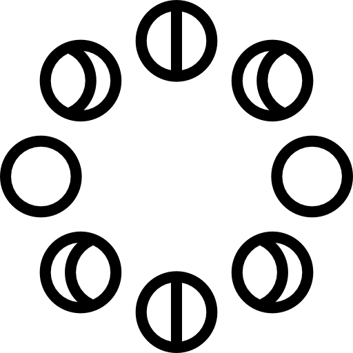
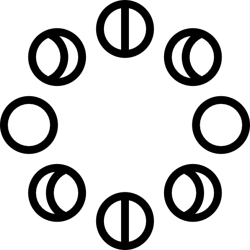
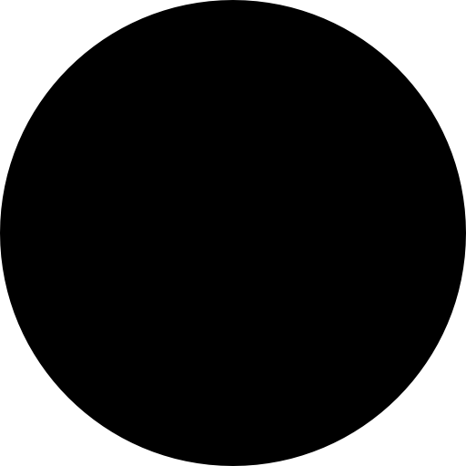
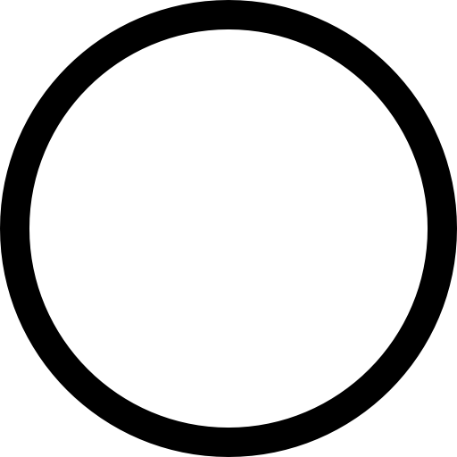
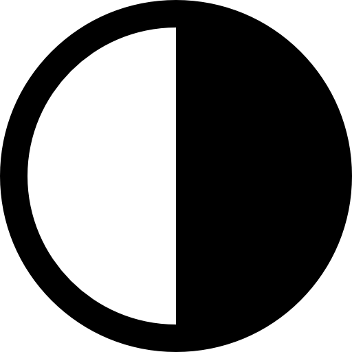
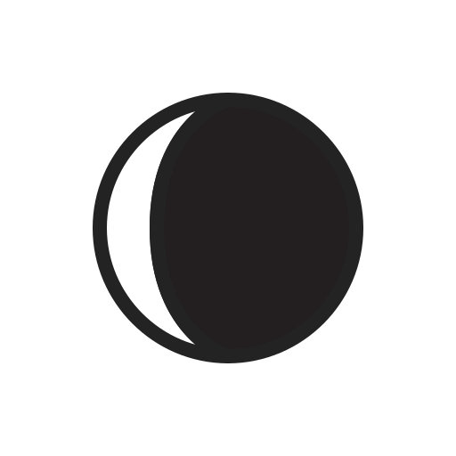

Moon Guide
The brightest and largest object in our night sky, the Moon makes Earth a more livable planet by moderating our home planet's wobble on its axis, leading to a relatively stable climate. It also causes tides, creating a rhythm that has guided humans for thousands of years.
Earth's only natural satellite is simply called "the Moon" because people didn't know other moons existed until Galileo Galilei discovered four moons orbiting Jupiter in 1610. In Latin, the Moon was called Luna, which is the main adjective for all things Moon-related: lunar.
We always see the same side of the Moon, because as Earth's natural satellite revolves around our planet, the Moon rotates, causing the same side to always face us. And yet, the Moon looks a little different every night. Sometimes the entire face glows brightly. Sometimes we only see a thin crescent. Other times the Moon seems to disappear entirely.
Our Moon doesn't shine, it reflects sunlight. Just as it does in the daytime on Earth, sunlight illuminates the Moon's surface too. That is, the Moon has a day side and also a night side. And as the Moon orbits Earth each month, we do not have a continuous view of the entire side of the Moon that's facing the Sun. Most of the time, our view of the Moon looks toward part of the sunlit side and part of the dark side at the same time.
When sunlight is illuminating only the Moon's far side – the side we can't directly see from Earth – that phase is called a new moon. When sunlight illuminates only the Moon's near side – the side that always faces Earth – we call that a full moon. The rest of the month, we see a different amount of the daytime side of the Moon each day. These continually changing views of the sunlit part of the Moon are the Moon's phases. The eight lunar phases are, in order: new moon, waxing crescent, first quarter, waxing gibbous, full moon, waning gibbous, third quarter and waning crescent. The cycle repeats once a month (every 29.5 days).
 

New Moon
This is the invisible phase of the Moon, with the illuminated side of the Moon facing the Sun and the night side facing Earth. In this phase, the Moon is in the same part of the sky as the Sun and rises and sets with the Sun. Not only is the illuminated side facing away from the Earth, it’s also up during the day!
Waxing Crescent
This silver sliver of a Moon occurs when the illuminated half of the Moon faces mostly away from Earth, with only a tiny portion visible to us from our planet. It grows daily as the Moon’s orbit carries the Moon’s dayside farther into view. Every day, the Moon rises a little bit later.
First Quarter

The Moon is now a quarter of the way through its monthly journey and you see half of its illuminated side. People may casually call this a half moon, but remember, that’s not really what you’re witnessing in the sky. You’re seeing just a slice of the entire Moon ― half of the illuminated half. A first quarter moon rises around noon and sets around midnight. It’s high in the sky in the evening and makes for excellent viewing.
Waxing Gibbous
Now most of the Moon’s dayside has come into view, and the Moon appears brighter in the sky.
Full Moon
This is as close as we come to seeing the Sun’s illumination of the entire day side of the Moon (so, technically, this would be the real half moon). The Moon is opposite the Sun, as viewed from Earth, revealing the Moon’s dayside. A full moon rises around sunset and sets around sunrise.
Waning Gibbous
As the Moon begins its journey back toward the Sun, the opposite side of the Moon now reflects the Moon’s light. The lighted side appears to shrink, but the Moon’s orbit is simply carrying it out of view from our perspective. The Moon rises later and later each night.
Last Quarter
The Moon looks like it’s half illuminated from the perspective of Earth, but really you’re seeing half of the half of the Moon that’s illuminated by the Sun ― or a quarter. A last quarter moon, also known as a third quarter moon, rises around midnight and sets around noon.
Waning Crescent
The Moon is nearly back to the point in its orbit where its dayside directly faces the Sun, and all that we see from our perspective is a thin curve.